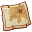

Avant de partir à l'assaut des mondes marin il faut te préparer! Trouves les objets qui te manque pour commencer ton périple.
Commence par préparer ton vaisseau pour partir à la recherche du tŕsor.
Une ancre  Une voile
Une voile
Ici tu trouveras les objets nécessaires pour te diriger sur les flots.
Une boussole
Un sextant 
5 fruits et légumes par jour ce n'est pas possible en mer! Il faut que tu ailles pêcher des poissons pour te nourrir. Trouves les objets dont tu as besoin.
Une câne à pêche
Des apâts
Tu arrives enfin sur une île, une carte te sera utile.
Une carte 
La fin de ton périple est proche, trouve le trésor, la richesse est à ta porté.
Un coffre


L'histoire de la machine "La coque de noix"
Machine faite principalement de récup pour le métal, chutes laser etc.
Ce qui nous renvoie au sens de la coque de noix : un objet flottant ou un petit bateau instable ou encore un bateau fait de bric et de broc (rudimentaire).
Ghislaine est satisfaite du résultat de la teinte d'une authentique noix de Grenoble, fierté pour la grenobloise qu'elle est.
La feuille située à l'arrière pour le gouvernail est inspirée d'une feuille ramassée en automne, à Trentemoult.
L'histoire de la machine "Le grondin des sables"
Genèse : envie de départ de 2 constructeurs qui voulaient un requin, Manu B l'a dessiné suivant une photo de FD avec pour légende Grondin des sables. Cet animal n'existe pas, Manu a fait des recherches et ce qui s'en rapprochait le plus et en fait une chimère d'Amérique. (HYDROLAGUS COLLIEI ou spotted ratfish), et il a été réalisé par d'autres : pur travail d'équipe !
De plus, ils n'ont pas de barbillons mais esthétiquement, ça fonctionne... Du coup , Manu B en a rajouté sur son dessin et, par extension, sur la machine. La chimère appartient à la famille des requins, poisson cartilagineux, primitifs. Il y en a une empaillée au muséum de Nantes.
Sous le cuir, la mousse P.U, technique proposé par Claude Rigo. Rivets en cuivre comme pour les bateaux à clins.
Le charriot est inspiré des chariots d'exploration sous-marine qui ressemble à des grosses caisses en ferraille.
Récupération de structure d'anciennes machines à coudre pour les marches.
L'histoire de la machine "Le poisson volant"
Cette machine est une des plus proche du dessin d'origine de François Delarozière.
Sur le croquis original, un propulseur était prévu à l'arrière, n'ayant pas été installé , il a été recyclé sur le remorqueur se transformant ainsi en propulseur d'étrave.
La machine est cintrée, bien entendu, dans le sens de la marche du carrousel, de fait, on a modifié le joint qui a été réalisé dans le sens haut bas.
Les yeux sont vairons, une pupille est légèrement plus dilatée que l'autre, dû au fait qu'ils sont soufflés à la bouche et donc que ce sont des pièces uniques.
On a utilisé des selles de poney pour chevaucher cette machine extraordinaire.
Les écailles sont en cuir. Manu CORBIER a découpé des bandes d'écailles qu'il a ensuite clouté directement sur la structure bois de la machine. L'exocet est barbu, c'est un animal unique au monde.
L'histoire de la machine "La tortue girafe"
Machine construite par une équipe d'allemand.
Le métal est forgé : à chaud, il est martelé. Les yeux sont en bois tourné par Dom. Les motifs sont pyrogravés, et les petits boules de bois du cou s'utilisent en marine, et s'appellent des pommes de ragages ou des couilles de chat (que l'on retrouve sur le bateau tempête pour évoquer le bruit des clapotis).
La douceur du regard de l'animal se rapproche du regard émerveillé des enfants.
Elle se manipule toute en douceur, comme une marionnette.
La tortue girafe, ou tortue à long cou vit en Australie, elle ne rentre pas sa tête dans sa carapace et la met sur le côté.
Tête de tortue terrestre (l'original étant ressemblait trop à un serpent) et corps de tortue girafe.